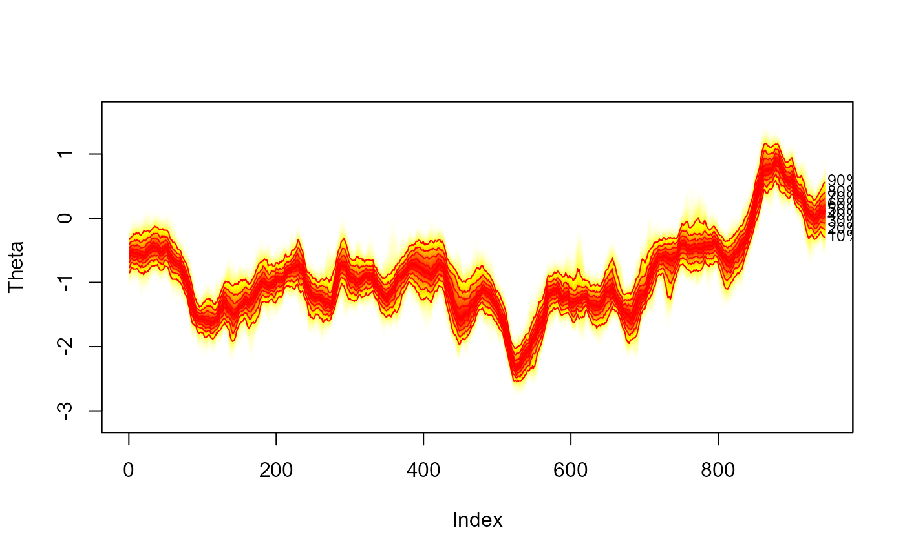

1000 MCMC Simulations of Estimated Volatility from Pound Dollar Exchange Rate Data.
th.mcmc.RdMCMC simulations of volatility obtained from the bugs function in the R2OpenBUGS package. Estimates based on the stochastic volatility model for Pound-Dollar exchange rate data presented in the appendix of Meyer and Yu (2002). The MCMC was ran for 1100 simulations, thining to keep every 10th iteration, and treating the first 100 simulations as burn in.
Larger simulations (without thinning) can be obtained using the data (svpdx) and the my1.txt BUGS file contained in this package, see example below.
References
Meyer, R. and J. Yu (2002). BUGS for a Bayesian analysis of stochastic volatility models. Econometrics Journal 3 (2), 198–215.
Sturtz, S., U. Ligges, and A. Gelman (2005). R2WinBUGS: a package for running WinBUGS from R. Journal of Statistical Software 12 (3), 1–16.
Examples
# empty plot
plot(NULL, type = "n", xlim = c(1, 945), ylim = range(th.mcmc), ylab = "Theta")
# add fan
fan(th.mcmc)

##
##Create your own (longer) MCMC sample:
##
if (FALSE) { # \dontrun{
# library(tsbugs)
# library(R2OpenBUGS)
# # write model file:
# my1.bug <- dget(system.file("model", "my1.R", package = "fanplot"))
# write.model(my1.bug, "my1.txt")
# # take a look:
# file.show("my1.txt")
# # run openbugs, remember to include theta as a param otherwise will not
# # have anything to plot
# my1.mcmc<-bugs(data=list(n=length(svpdx$pdx),y=svpdx$pdx),
# inits=list(list(phistar=0.975,mu=0,itau2=50)),
# param=c("mu","phi","tau","theta"),
# model="my1.txt",
# n.iter=11000, n.burnin=1000, n.chains=1)
#
# th.mcmc <- my1.mcmc$sims.list$theta
} # }